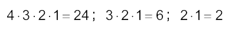
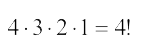
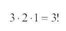
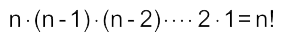
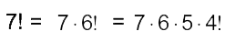
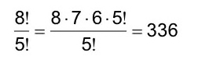
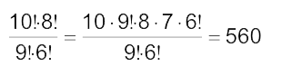
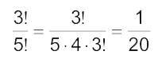

Factoriales
En algunos problemas de matemática se nos presentan multiplicaciones de números naturales sucesivos tal como: 
Para abreviar estas expresiones, se usa una notación especial llamada notación factorial y nos denota las multiplicaciones sucesivas de n hasta 1 y se define como:
Se lee“cuatro factorial”
 Se lee “tres factorial”
En términos generales:
 Se lee “n factorial”
Propiedades:
a) Se puede calcular para n natural
Ejemplo: 
b) 0! = 1
Ejemplos:
1) 5! = 5. 4. 3. 2. 1 = 120
2) 4! 3! = (4 . 3. 2 . 1) . (3 . 2 . 1) = (24)(6) = 144
3) 
4) 
5) 